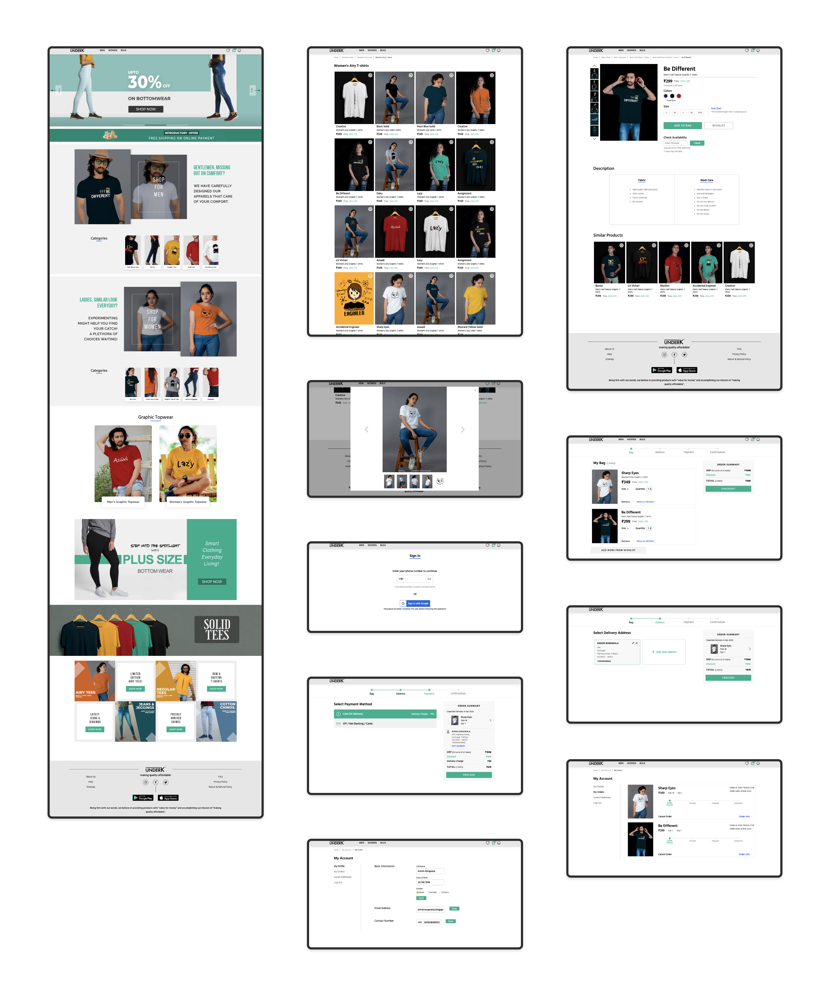

underK
Design E-commerce Clothing Store
ROLE
UI/UX Design (Research, Interaction Design, Wireframes, Visual Design), Product Photography.
May 2019 - Jan 2020
The Design Challenge
UnderK is an e-commerce store with a “Customer First” belief that sells the item(s) ranging from apparel, shoes and many more, all under ₹1,000/- and thus the name “underK”. Being firm with our words, we believe in providing products with “value for money” and turning the mere thought of “quality can be inexpensive” into reality
PROJECT GOALS
- Website designing: Design a user friendly responsive e-commerce website which efficiently conveys our solution to the target audience.
- Logo designing: Design a logo for the company that is modern and neutral enough to attract all types of people and styles.
Research
As a first step, it’s crucial to gather information that helps me define the problems, understand the users, identify the opportunities.
SURVEYS
To understand human psychology in the context of Apparels of E-commerce; I conducted a survey and got 559 responses and still counting.
I started Market Research to learn more about the market and demographics as well as help under identify opportunities in the market, uncover potential problems and track ongoing trends. Conducted another survey to understand the competitors’ strategies; one example is shown below.
INTERVIEWS
To understand the pain points of the users in the existing shopping scenario, conducted interviews with 11 participants over voice calls through which I observed users’ behavioural pattern and expectations.
User InterviewsWhat we saw
- Users prefer buying when/where there are sales, promotion & coupons available.
- Users avoid paying shipping charges
- Users want free and easy returns
What we provided
- Hasslefree Login
- All categories visible
- Easy access to new arrivals from home page
- Easy view and selection of specific catagories
- Access to cart/bag from every page in the website
- Complete product detail including fabric and wash care
- High-resolution product images
- Similar product suggestions
- Secure payment assurance
- Uncluttered checkout
User Persona
As the initial phase of product design, I carried out a survey and interviewed few people from the target audience which helped me catagorize the 3 types of users whose problems we are solving via this product.
Information Architecture
Now to organise the site's content into interlinked categories that aim to create a better user experience, I created a sitemap that includes all of my proposed screens and user flow in order to get myself a better understanding of the site structure and the relationship of the contents within underK's site.
SITE MAP

Interaction Design
This phase incorporates information architecture and usability to define how a product will behave. The discovery phase and Project Strategy shed light on designing effective interactions for the underK site. Detailed flow and interaction design were now required to bring the experience to life.
USER FLOW
The user flow is associated with the digital product we are designing. Each page in the user flow matches with the site map, making the understanding of the flow very clear with respect to the actual pages that will be designed for the site. This is helpful to both, the designer and the developer. And also ensures that the user doesn't need to run among pages while the process making things hasstlefree.
Wireframes
Before creating wireframes, I re-read my sitemap and user flows then created the required UI. Requirements that contain my own to-do-list for each wireframe. I focused on entire the buying process from when the user arrives at the product listing pages all the way to the checkout process.
These wireframes represent the process of how the users enter and look for the items, add them to cart and click to place the order.

User Interface Design
BRAND LOGO
After writing down a few keyword around which our product design circulates, I came out with some business objectives for the brand logo like: Modern, Neutral, Minimal, Stylish. After sketching pages of these concepts on paper, I finally came up with these two logos for underK and then digitalized them with Illustrator.

BRAND STYLE TILES
Below are the style tiles that presents the finalized color scheme, typography and Icon-set.


HIGH FIDELITY DESIGN
Besides the desktop version, the users also need to search for the information on their mobile(shown below) or tablet. Therefore, I considered designing responsive UI to be the best way to reach more customers in the market. Looking over the user flows, wireframes and style tile, I created a High-Fidelity Design for underK.


Reflection
Working in an early-stage startup was an extremely steep learning curve. It was an eye-opening experience that taught me a lot about being lean and knowing when and where to focus your energy and efforts. I enjoyed working on all the steps! The entire design process revealed that setting a suitable follow path and iterating it can actually help solve any problem!